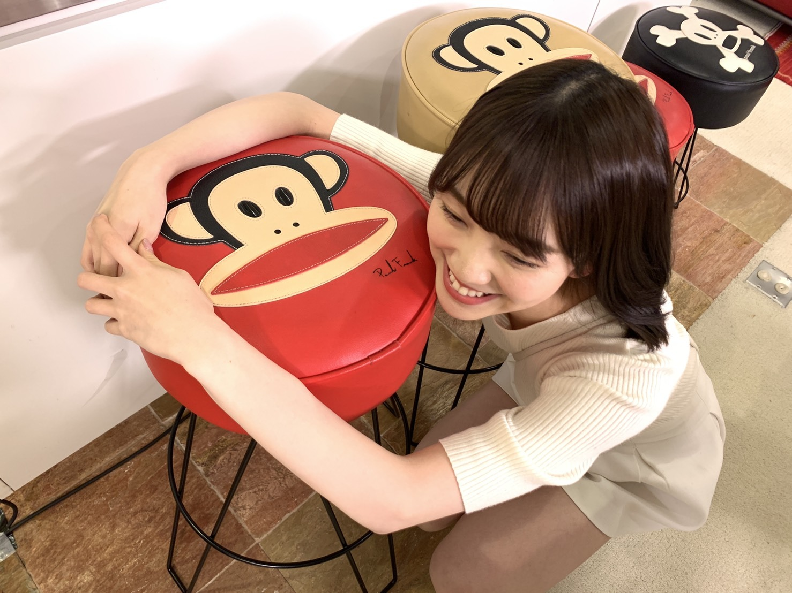
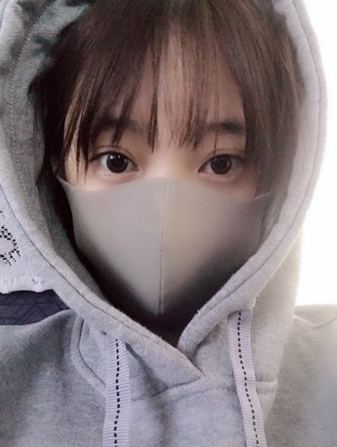

2019/0326Tue#ザンビ
先日の、坂道テレビ
見てくださりありがとうございました✨


小林由依ちゃんと齊藤京子ちゃんとお話ししてお鍋作ってまったりと貴重な時間でした！
昔から、自分からはなかなか話しかけれない人見知りでして来てくれたら仲良くなれるというか来るもの拒まずタイプなので、3人の中だと最年長だししっかりしなきゃ！話さなきゃ！とすーごい緊張してました。笑
手汗具合とか伝わってないといいな...笑
でも楽しかったのでまたおふたりと会ったらいろんなお話ししたいです☺︎
そして日テレドラマ ザンビが
明日、水曜24:59〜最終回になります！
早い...！！寂しい...

みり愛のザンビ迫力があって怖かったなぁ〜

フリージア学園の生徒、仲良しです！
いつもわいわいみんなで楽しかった！
撮影したのは一年前、
既に懐かしく感じます
是非最後までザンビを楽しんでいただけたら嬉しいです✨
本格的に連続ドラマに出させていただくのはザンビが初めてでしたがスタッフさんキャストの皆さんに支えられて日々学び、進み、充実した数ヶ月間でした☺︎
実乃梨という役に出会い、実乃梨の強さや優しさを日々感じながら演じることができて私も自分自身と向き合いながら振り返りながら過ごせました！
お芝居が好きだしもっともっとしたいと思えたし、いつの日か色んなドラマに出られるように少しずつ頑張りたいです✨
ザンビの感想お待ちしてますね〜
明日やで〜

#すっぴんフードマスク
ではははは！
2019/03/26 19:12
コメント(395)
ブログ更新ありがとう〜
ザンビ意外と泣けました…
それからホットギミックがすごく楽しみです。
これからプロモーションかねてメディア露出が増える日々を楽しみにしてます！
ザンビ意外と泣けました…
それからホットギミックがすごく楽しみです。
これからプロモーションかねてメディア露出が増える日々を楽しみにしてます！
ドラマ『ザンビ』、おつかれさまでしたー♪
最後、壮絶な結末で幕を閉じましたなぁ
与田ちゃんと堀ちゃんのくだりは、2割くらい予想していたけど、ほとんどどっちなのか判別がつかないギリギリのところを狙った感じで、すごく良い展開だった
ただ怖いだけではなくて、感動して面白みもあって、非常に良いドラマだったね！
最後、壮絶な結末で幕を閉じましたなぁ
与田ちゃんと堀ちゃんのくだりは、2割くらい予想していたけど、ほとんどどっちなのか判別がつかないギリギリのところを狙った感じで、すごく良い展開だった
ただ怖いだけではなくて、感動して面白みもあって、非常に良いドラマだったね！
みおな、こんばんは！ 2期生6周年おめでとう！
ザンビ最終回見ました。
屋上のシーン、未央奈の演技力にシビれました！
特に飛び降りる前の様々な感情が入り混じった表情は圧巻でした。
女優、堀未央奈の面目躍如！
屋上のシーン、未央奈の演技力にシビれました！
特に飛び降りる前の様々な感情が入り混じった表情は圧巻でした。
女優、堀未央奈の面目躍如！
2期生結成6周年おめでとう！
3人トークでは未央奈先輩って感じが出てて、なんか新鮮でおもしろかった！
これからも坂道グループを引っ張っていってね！！！
3人トークでは未央奈先輩って感じが出てて、なんか新鮮でおもしろかった！
これからも坂道グループを引っ張っていってね！！！
おはよー、未央奈ちゃん♪
坂道テレビ見ました。録画して見ました。
未央奈ちゃん細くてかわいかったです。
未央奈ちゃんは食べることが好きで
人が少ないところに出かけるのが好きなのですね。
僕は１６時ごろにラーメン屋に行ったら
お客さんがいませんでした。
ザンビではフリージア学園というのがあるのですね。
僕の地域では放送されてないのでマンガや小説で
ザンビがあれば読んでみます。
ではまたコメントしますね☆
坂道テレビ見ました。録画して見ました。
未央奈ちゃん細くてかわいかったです。
未央奈ちゃんは食べることが好きで
人が少ないところに出かけるのが好きなのですね。
僕は１６時ごろにラーメン屋に行ったら
お客さんがいませんでした。
ザンビではフリージア学園というのがあるのですね。
僕の地域では放送されてないのでマンガや小説で
ザンビがあれば読んでみます。
ではまたコメントしますね☆
祝 2期生結成 6周年！
これからも、2期生を応援し続けるよ！
堀ちゃん、大好きだよー
これからも、2期生を応援し続けるよ！
堀ちゃん、大好きだよー
みおなー！
坂道テレビめちゃ良かった！！
そんなに緊張してたんやね、笑
会えるのを楽しみにしとる！︎ ︎☺︎
坂道テレビめちゃ良かった！！
そんなに緊張してたんやね、笑
会えるのを楽しみにしとる！︎ ︎☺︎
ザンビ最終回寝坊して半分しか観れなかったぁ！！！！！！！！！
未央奈ちゃん、お疲れ様です。
ドラマのザンビの最終回見ました。教会の鐘を鳴らすシーンが感動しました。
ホットギミック楽しみしてます。絶対見に行きます。
ドラマのザンビの最終回見ました。教会の鐘を鳴らすシーンが感動しました。
ホットギミック楽しみしてます。絶対見に行きます。
坂道テレビ見ました。とても、楽しい番組でした。録画しているので、いつでも見返せます。
そして、ザンビ毎週見てました。面白かったですし、特に最終回は、感動しました。
映画ホットギミックも、楽しみです。
いつか、乃木坂46メンバーが出演してる、舞台見に行ってみたいなと思います。
5月から、就職することが決まりました。僕も、頑張りますので、堀ちゃん、そして、坂道グループ全員、これからも、頑張って下さい。
30日の土曜日に、坂道シリーズのプレゼン発表をします。
皆さんの思いを胸にして、頑張ります。
そして、ザンビ毎週見てました。面白かったですし、特に最終回は、感動しました。
映画ホットギミックも、楽しみです。
いつか、乃木坂46メンバーが出演してる、舞台見に行ってみたいなと思います。
5月から、就職することが決まりました。僕も、頑張りますので、堀ちゃん、そして、坂道グループ全員、これからも、頑張って下さい。
30日の土曜日に、坂道シリーズのプレゼン発表をします。
皆さんの思いを胸にして、頑張ります。
ザンビ良かったよー。ありがとうーー！！！！
これからも頑張ってねー
これからも頑張ってねー
みおなちゃん、こんにちは。
2期生結成6周年おめでとうございます。
ドラマザンビ最終回、僕の住む北海道は放送されないので、動画サイトで見たよ。実乃梨ちゃん、ザンビになってしまいましたね。
屋上のシーンは感動しました。みおなちゃん、とても演技じょうずでしたよ。
みおなちゃん、体調に気をつけて仕事頑張ってね。
またコメントするね。
2期生結成6周年おめでとうございます。
ドラマザンビ最終回、僕の住む北海道は放送されないので、動画サイトで見たよ。実乃梨ちゃん、ザンビになってしまいましたね。
屋上のシーンは感動しました。みおなちゃん、とても演技じょうずでしたよ。
みおなちゃん、体調に気をつけて仕事頑張ってね。
またコメントするね。
未央ちゃん今日ZIP!春フェス行くよ(o^^o)
楽しみ(o^^o)
ザンビ最終回見たよ(o^^o)
斉藤貴巳
楽しみ(o^^o)
ザンビ最終回見たよ(o^^o)
斉藤貴巳
みおちゃん
ザンビの最終回を観たよ。
辿り着いた屋上で、僕は実乃梨に惚れてしまった…
できないよそんなこと…
そんなことできる訳ない…！
いいよ、それでも…
それでもいい…
僕が楓だったなら、泣きながらそう言って乃梨役のことを抱き締めていたよ…
※実際に屋上でのシーンはボロボロと涙を流しながら観ていた。
当初は、これ、もしも実乃梨がザンビになったら堀ゾンビならぬ堀ザンビじゃん？とか思ったりもした。だけど最終回はみおちゃんの演技に魅せられて、引き込まれて、一瞬たりとも目が離せなくて、最後の最期で女優、堀未央奈に惚れてしまった…！今後がもの凄く楽しみ！主演する映画も観たい！そう思わされた最終回だったよ！(^ ^)
ちなみに飛鳥への注目度も上がった！
ザンビの最終回を観たよ。
辿り着いた屋上で、僕は実乃梨に惚れてしまった…
できないよそんなこと…
そんなことできる訳ない…！
いいよ、それでも…
それでもいい…
僕が楓だったなら、泣きながらそう言って乃梨役のことを抱き締めていたよ…
※実際に屋上でのシーンはボロボロと涙を流しながら観ていた。
当初は、これ、もしも実乃梨がザンビになったら堀ゾンビならぬ堀ザンビじゃん？とか思ったりもした。だけど最終回はみおちゃんの演技に魅せられて、引き込まれて、一瞬たりとも目が離せなくて、最後の最期で女優、堀未央奈に惚れてしまった…！今後がもの凄く楽しみ！主演する映画も観たい！そう思わされた最終回だったよ！(^ ^)
ちなみに飛鳥への注目度も上がった！
＜ホットギミック＞を1巻～４巻まで買いました。 全１２巻そろえてから１巻を読み始めたい気がする。 では。
ザンビのドラマ
すごい感動して最終回とくに涙が止まりませんでした。
とくに与田ちゃんがザンビになってるのにあすかを守るところとか未央奈があすかをザンビにしないように自ら飛び降りたところとか、、すごい泣きました。
友情の大切さとかをすごく学ばされました。ありがとうございます。 未央奈大好き！！
すごい感動して最終回とくに涙が止まりませんでした。
とくに与田ちゃんがザンビになってるのにあすかを守るところとか未央奈があすかをザンビにしないように自ら飛び降りたところとか、、すごい泣きました。
友情の大切さとかをすごく学ばされました。ありがとうございます。 未央奈大好き！！
未央奈ちゃん！
2期生6周年おめでとう！
2期生が大好き！
これからも、2期生全員に素晴らしい事が沢山ありますように。
いつも頑張ってね！
「ゴロゴンゾーラ」はいいですね！

2期生6周年おめでとう！
2期生が大好き！
これからも、2期生全員に素晴らしい事が沢山ありますように。
いつも頑張ってね！
「ゴロゴンゾーラ」はいいですね！
みおちゃん！昨日レコメン最後の最後に読まれたよ！！女心読まれなくてもう諦めてたから本当に嬉しい、、読まれた時に、モモンガ？ってちょっと笑ってくれたのも嬉しかった笑 2期生の魅力は、真面目なところや力強さって言ってたけど、それ聞いてめちゃいいこと言うやんって感動した！他にも仲が良くて地元の子も多くて、見てるとどのグループよりも応援したくなるところも良さだと思う！私がこんなに乃木坂を好きになったのは、2期生、未央奈がいてくれたからだよ。本当に大好きです！すっぴん可愛い！！！早く会いたい！！次もレコメン頑張るね！大好き！
ももんが
ももんが
２期生の・・・・６周年のお誕生日おめでとう！！
西川さん・米徳さん・矢田さん・・・いおりちゃんも
忘れられないメンバーです！！
西川さん・米徳さん・矢田さん・・・いおりちゃんも
忘れられないメンバーです！！
こんばんは
2期生結成6周年おめでとうございます✨
レコメン！での色々なお話楽しかったです！
真っ白な私服姿も肌も輝いて見えましたよ♡
ゴルゴンゾーラ♪は素敵な曲ですねー！
トロピカルな感じで楽しい曲調でした☆
ザンビ最終回とっても切なかったです！！
美乃梨の最期に見入ってしまいましたー！
美乃梨だからなのか、未央奈だからなのか、
観ていてとても切ない気持ちになりました◎
撮影の裏話の方はとっても楽しかったです☺
2期生結成6周年おめでとうございます✨
レコメン！での色々なお話楽しかったです！
真っ白な私服姿も肌も輝いて見えましたよ♡
ゴルゴンゾーラ♪は素敵な曲ですねー！
トロピカルな感じで楽しい曲調でした☆
ザンビ最終回とっても切なかったです！！
美乃梨の最期に見入ってしまいましたー！
美乃梨だからなのか、未央奈だからなのか、
観ていてとても切ない気持ちになりました◎
撮影の裏話の方はとっても楽しかったです☺
堀ザンビが見たかった、、、
ザンビ最終回みたよ✨
まさかあのような展開て終わるとは・・・
堀ちゃんが 信じられなかつた。(>_<)
でも最後まで、可愛さは変わらなかった
いつまでも応援してるからさ✨✨✨
がんばっぺ～
堀未央奈を愛するトッポでした
まさかあのような展開て終わるとは・・・
堀ちゃんが 信じられなかつた。(>_<)
でも最後まで、可愛さは変わらなかった
いつまでも応援してるからさ✨✨✨
がんばっぺ～
堀未央奈を愛するトッポでした
こんばんは╰(*´︶`*)╯♡
2期生、6周年おめでとうございます！
これからも微力ながら応援しております（╹◡╹）♡
2期生、6周年おめでとうございます！
これからも微力ながら応援しております（╹◡╹）♡
ザンビ最終回、感動しました
ラストの堀ちゃんの演技にぐんぐん引き込まれて
涙と鼻水で顔がひどいことになってました
ラストの堀ちゃんの演技にぐんぐん引き込まれて
涙と鼻水で顔がひどいことになってました
堀ちゃんこんばんは！
2期生6周年おめでとうございますー！！(o^^o)
6年、堀ちゃんにとってどんな時間だったでしょうか？
まだ振り返るには早いですかね笑
乃木坂46誕生が2012年
2期生誕生が2013年
3期生の誕生がそこから3年後の2016年
乃木坂にとって「1期生と2期生」という期間が1番長いんですね( ´ ▽ ` )
この期間に乃木坂がどんどん大きくなっていきましたよね(^^)
今では2年連続レコード大賞をとる国民的グループとなっていますが、この期間があったから今がある、まぎれもない事実です( ´ ▽ ` )
私事ですが、僕の中でとても心に残っている言葉があります。
生駒さんが言われた「2期生は後輩というより戦友」
この一言だけで、どれだけ2期生が乃木坂にとって、そして1期生にとって大きい存在なのかが伝わってきます(^^)
苦しい時期もたくさんあったと思います、もしかしたら今もあるかもしれません。
それでも、いま僕たちの前で輝いてくれて、たくさんの幸せや笑顔をくれて、本当にありがとうございます(*´ー｀*)
乃木坂46が大好きな一ファンとして改めて、心からお祝いとお礼を言わせてください！
6周年おめでとうございます！
乃木坂46になってくれてありがとうございます！
これからも応援しています！！！(o^^o)
2期生の雰囲気が大好きですー！！
2期生6周年おめでとうございますー！！(o^^o)
6年、堀ちゃんにとってどんな時間だったでしょうか？
まだ振り返るには早いですかね笑
乃木坂46誕生が2012年
2期生誕生が2013年
3期生の誕生がそこから3年後の2016年
乃木坂にとって「1期生と2期生」という期間が1番長いんですね( ´ ▽ ` )
この期間に乃木坂がどんどん大きくなっていきましたよね(^^)
今では2年連続レコード大賞をとる国民的グループとなっていますが、この期間があったから今がある、まぎれもない事実です( ´ ▽ ` )
私事ですが、僕の中でとても心に残っている言葉があります。
生駒さんが言われた「2期生は後輩というより戦友」
この一言だけで、どれだけ2期生が乃木坂にとって、そして1期生にとって大きい存在なのかが伝わってきます(^^)
苦しい時期もたくさんあったと思います、もしかしたら今もあるかもしれません。
それでも、いま僕たちの前で輝いてくれて、たくさんの幸せや笑顔をくれて、本当にありがとうございます(*´ー｀*)
乃木坂46が大好きな一ファンとして改めて、心からお祝いとお礼を言わせてください！
6周年おめでとうございます！
乃木坂46になってくれてありがとうございます！
これからも応援しています！！！(o^^o)
2期生の雰囲気が大好きですー！！
未央奈ちゃん、ひろっしーです！コメント投稿575回目です！
前回はブログ「クロスなネックレス」にブログの感想を書きました！
時間→「No.392 2019年3月25日 01:41」
ブログ更新ありがとうございます！
「坂道テレビ」観ました！
グループの垣根を越えた共演、貴重でしたね！最年長だししっかりしなきゃ！話さなきゃ！というプレッシャーというか不安、僕も人見知りなので凄く分かります！よく頑張りましたし、手汗具合全然分かりませんでしたよ(笑)
日付が変わりましたが、2期生の皆さん、結成6周年本当におめでとうございます！
同じ時代に生まれてきてくれて、乃木坂に加入してくれて、大活躍してくれて、ありがとう！応援しがいがあるし、何より好きなアイドルを応援出来ている事が幸せな事なんだって改めて気づきました！未央奈ちゃんの笑顔で癒しを、頑張っている姿で元気と刺激を頂いています！これからも楽しい事は皆さんと一緒に共有し、辛い事は皆さんと一緒に乗り越えて、切磋琢磨しながら自分の夢に向かって頑張って下さい！未央奈ちゃんと同じ景色見たいな～！大好き！
「ゴルゴンゾーラ」想像していたのよりクセが強すぎなくて、サビも爽やかで良かったです！
ここまで読んで頂きありがとうございました！
毎日お仕事お疲れ様です！体調にはくれぐれも気を付けて頑張ってくださいね！
おやすみおな～！
前回はブログ「クロスなネックレス」にブログの感想を書きました！
時間→「No.392 2019年3月25日 01:41」
ブログ更新ありがとうございます！
「坂道テレビ」観ました！
グループの垣根を越えた共演、貴重でしたね！最年長だししっかりしなきゃ！話さなきゃ！というプレッシャーというか不安、僕も人見知りなので凄く分かります！よく頑張りましたし、手汗具合全然分かりませんでしたよ(笑)
日付が変わりましたが、2期生の皆さん、結成6周年本当におめでとうございます！
同じ時代に生まれてきてくれて、乃木坂に加入してくれて、大活躍してくれて、ありがとう！応援しがいがあるし、何より好きなアイドルを応援出来ている事が幸せな事なんだって改めて気づきました！未央奈ちゃんの笑顔で癒しを、頑張っている姿で元気と刺激を頂いています！これからも楽しい事は皆さんと一緒に共有し、辛い事は皆さんと一緒に乗り越えて、切磋琢磨しながら自分の夢に向かって頑張って下さい！未央奈ちゃんと同じ景色見たいな～！大好き！
「ゴルゴンゾーラ」想像していたのよりクセが強すぎなくて、サビも爽やかで良かったです！
ここまで読んで頂きありがとうございました！
毎日お仕事お疲れ様です！体調にはくれぐれも気を付けて頑張ってくださいね！
おやすみおな～！
堀さん、こんばんは。
２期生６周年なんですね。おめでとうございます。これからの乃木坂を２期生がどのように変化させていくのか、楽しみにしてます。
２期生といえば、ゴルゴンゾーラ聞きました。変な人が好きって歌詞が堀さんに凄く合ってますね。堀さんに歌って欲しい歌です。
あとザンビの最終回見ました。屋上の場面での堀さんは、作中で一番美しかったです。これから全話見直すときには堀さんの演技とか、他にも細かい設定とか赤と青の照明の意味とか気を付けながら見ようと思います。
２期生６周年なんですね。おめでとうございます。これからの乃木坂を２期生がどのように変化させていくのか、楽しみにしてます。
２期生といえば、ゴルゴンゾーラ聞きました。変な人が好きって歌詞が堀さんに凄く合ってますね。堀さんに歌って欲しい歌です。
あとザンビの最終回見ました。屋上の場面での堀さんは、作中で一番美しかったです。これから全話見直すときには堀さんの演技とか、他にも細かい設定とか赤と青の照明の意味とか気を付けながら見ようと思います。
未央奈ちゃん、おはよう。
2期生結成6周年おめでとうございます
これからも皆さんのご活躍期待してます
「坂道テレビ」見ました。
乃木坂オンリーでファンの僕には
他のグループのメンバーさんは、
よく知りませんでしたが、
未央奈ちゃんがすごく料理を
テキパキしてるのを見てて、
改めて、かわいいなぁと思いました
「ゴルゴンゾーラ」も聴きました。
アップテンポで楽しい曲ですね！
「今が思い出になるまで」
4thアルバム発売が待ち遠しいです
さて、週末は大阪での握手会ですね。
楽しい握手会になるといいね
2期生結成6周年おめでとうございます
これからも皆さんのご活躍期待してます
「坂道テレビ」見ました。
乃木坂オンリーでファンの僕には
他のグループのメンバーさんは、
よく知りませんでしたが、
未央奈ちゃんがすごく料理を
テキパキしてるのを見てて、
改めて、かわいいなぁと思いました
「ゴルゴンゾーラ」も聴きました。
アップテンポで楽しい曲ですね！
「今が思い出になるまで」
4thアルバム発売が待ち遠しいです
さて、週末は大阪での握手会ですね。
楽しい握手会になるといいね
2期生!6周年おめペロ!ﾜﾝ (･x･U)≡≡≡３
僕もぎゃんばるヾ(=ﾟ･ﾟ=)ﾉﾆｬﾝ♪ 日向坂46さんの「キュン」4種類購入いたしましたよ(o≧▽ﾟ)oニパッ♡どんどんどんどん(ó㉨ò)ﾉ♡レコメン堀殿の美声に癒されうれぴーぽーo(￣◎￣)o ﾊﾞﾌﾞｩ♡
僕もぎゃんばるヾ(=ﾟ･ﾟ=)ﾉﾆｬﾝ♪ 日向坂46さんの「キュン」4種類購入いたしましたよ(o≧▽ﾟ)oニパッ♡どんどんどんどん(ó㉨ò)ﾉ♡レコメン堀殿の美声に癒されうれぴーぽーo(￣◎￣)o ﾊﾞﾌﾞｩ♡
みおにゃ‼︎
可愛すぎて可愛すぎる
坂道テレビ見た！
きょんことゆいぽんとすごい仲がいいね！
面白かった。
応援してます‼️
大好き
可愛すぎて可愛すぎる
坂道テレビ見た！
きょんことゆいぽんとすごい仲がいいね！
面白かった。
応援してます‼️
大好き
ザンビすごい良かったよ！！めっちゃ演技上手くて感動した！！
ザンビ、堀ちゃんのポテンシャルの高さを感じました。
これからも色々とチャレンジしてみてください。
以前、若月ちゃんが
「女優を目指してるから、いろんなキャラを演じたい！」
って、言ったよね。”箸くん”とか”ロボット”とか
自分のできるところで頑張ってるところは好感がもてた。
それに…何よりも彼女は、
いつも堀ちゃんの味方だった所が
個人的に好きなところでした。
堀ちゃんも、もうグループのミドルリーダー！
後輩を支える姿も見てみたいな。
楽しみにしてます。いろいろ楽しみにしてます！！
これからも色々とチャレンジしてみてください。
以前、若月ちゃんが
「女優を目指してるから、いろんなキャラを演じたい！」
って、言ったよね。”箸くん”とか”ロボット”とか
自分のできるところで頑張ってるところは好感がもてた。
それに…何よりも彼女は、
いつも堀ちゃんの味方だった所が
個人的に好きなところでした。
堀ちゃんも、もうグループのミドルリーダー！
後輩を支える姿も見てみたいな。
楽しみにしてます。いろいろ楽しみにしてます！！
未央奈さん！ こんばんは〜❤️❤️❤️ (o^^o) 未央奈さん！今日もお仕事お疲れ様〜❤️❤️❤️ 今夜も美味しい食事をたくさん食べて、いつもの未央奈さんらしく！頑張って下さいネ❤️❤️❤️❤️❤️❤️❤️❤️ じゃあ、未央奈さん！元気でね☆彡☆彡☆彡 風邪引かないでね❤️❤️❤️❤️ ( ´ ▽ ` )ﾉ
こんばんは！
坂道テレビ見たよ
未央奈の料理してる姿、良かったなぁ
いいお嫁さんになるよ
それと、なぁちゃんの卒コン特集があって嬉しかった
メンバーの気持ちを聞けて良かったし、なによりなぁちゃんの卒業についての想いを聞けて良かった
なぁちゃんが言ってた、ライブが出来なくなるっていうのが悲しいポイントってのは心に響いたよ
正直、なぁちゃんが歌って踊ってる姿をもっと見たかったなぁ
しんみりしちゃったから、それではまた！
坂道テレビ見たよ
未央奈の料理してる姿、良かったなぁ
いいお嫁さんになるよ
それと、なぁちゃんの卒コン特集があって嬉しかった
メンバーの気持ちを聞けて良かったし、なによりなぁちゃんの卒業についての想いを聞けて良かった
なぁちゃんが言ってた、ライブが出来なくなるっていうのが悲しいポイントってのは心に響いたよ
正直、なぁちゃんが歌って踊ってる姿をもっと見たかったなぁ
しんみりしちゃったから、それではまた！
未央奈ー！ブログ更新ありがとう！！
ザンビが放送地域ではなかったけれどおじいちゃんとおばあちゃんの家は放送地域だったから録画してもらって今度見てくるね！
色々予告とか見てて怖そうだからドキドキしてるけど未央奈の迫真の演技が楽しみです！！
また感想コメントします！じゃあバイバーイ！！
ザンビが放送地域ではなかったけれどおじいちゃんとおばあちゃんの家は放送地域だったから録画してもらって今度見てくるね！
色々予告とか見てて怖そうだからドキドキしてるけど未央奈の迫真の演技が楽しみです！！
また感想コメントします！じゃあバイバーイ！！
ザンビ最終回やっと見れました！
実乃梨の表情にすごく惹き込まれました。
冒頭の楓と実乃梨のシーン、特に、楓の言葉に抑えきれずに浮かんだ嬉しさ、回顧しているときの淋しさと羨望の表情、楓が行く前に呼び止めて確認するときの不安な表情→いろんな考えと想いが溢れて決壊しそうになるのが垣間見えた瞬間的な表情→優しさと嬉しさで送り出しつつも押し殺している苦しさ辛さが僅かに感じられた 実乃梨の人柄を感じることができたような、そんなシーン・表情が自分のお気に入りのシーンです✨
それと、その時に楓が語った実乃梨像は、まるで未央奈さんのことを言ってるみたいに感じました。
そして勝手に元気を頂きました✨
ホットギミック公開が待ち遠しい。。。✨
今日はTGCですね！楽しんで頑張ってください✨✨
実乃梨の表情にすごく惹き込まれました。
冒頭の楓と実乃梨のシーン、特に、楓の言葉に抑えきれずに浮かんだ嬉しさ、回顧しているときの淋しさと羨望の表情、楓が行く前に呼び止めて確認するときの不安な表情→いろんな考えと想いが溢れて決壊しそうになるのが垣間見えた瞬間的な表情→優しさと嬉しさで送り出しつつも押し殺している苦しさ辛さが僅かに感じられた 実乃梨の人柄を感じることができたような、そんなシーン・表情が自分のお気に入りのシーンです✨
それと、その時に楓が語った実乃梨像は、まるで未央奈さんのことを言ってるみたいに感じました。
そして勝手に元気を頂きました✨
ホットギミック公開が待ち遠しい。。。✨
今日はTGCですね！楽しんで頑張ってください✨✨
どうもかずです。
ザンビの感想を書きにきました。
ざっくり言うとずっと目が離せなかったです。
教会での楓とみのりのシーンでお互いを尊敬し合い意識しあっていた雰囲気。
放送で楓が流れた時。
聖との再会、実はザンビだった。
ザンビ化しても楓を爆発から守った聖の想いの強さと表情。
ザンビ化しても楓を襲わなかったみのりの想いと強さ。
みのりの最後の言葉と表情がすごく美しく感じました。
楓は辛いですね…
みのりと聖は最後までザンビでないことが証明されていなかったので怪しんで見ていましたが「これだけ長くいるなら大丈夫なのかな」と思い始めていたのでショックでした。
穏やか、嬉しさ、感動、ショック、涙。
とても心揺さぶられました。
とても面白い作品でした。
こんなところです。
では～
ザンビの感想を書きにきました。
ざっくり言うとずっと目が離せなかったです。
教会での楓とみのりのシーンでお互いを尊敬し合い意識しあっていた雰囲気。
放送で楓が流れた時。
聖との再会、実はザンビだった。
ザンビ化しても楓を爆発から守った聖の想いの強さと表情。
ザンビ化しても楓を襲わなかったみのりの想いと強さ。
みのりの最後の言葉と表情がすごく美しく感じました。
楓は辛いですね…
みのりと聖は最後までザンビでないことが証明されていなかったので怪しんで見ていましたが「これだけ長くいるなら大丈夫なのかな」と思い始めていたのでショックでした。
穏やか、嬉しさ、感動、ショック、涙。
とても心揺さぶられました。
とても面白い作品でした。
こんなところです。
では～
ザンビ終わっちゃった…( ω-、)
ブログ更新ありがとう〜
ザンビ良かった〜!!
ザンビ良かった〜!!
こんにちは。
コメント遅くなり、申し訳ありません。
『坂道TV』
このブログの写真。
あー、お猿さんの絵が付いた椅子と戯れている。
未央奈さんの猿好きを知って、準備してくれたのかな？
スタッフさんに愛されていますね。
番組の感想。
小林由依さん、齋藤京子さんと、
人見知りをする人、もっとする人、大丈夫な人の組み合わせで、
私にとって、グループのイメージそのままの3人。
一番先輩の未央奈さんが必然的に進行役で、
「由依ちゃんは？」と優しい笑顔と声で話題をふるのが好きでした。
『ザンビ』
このブログの写真。
高校生役だからか、
メイクがナチュラルで、
昔の未央奈さんが戻ってきたよう。
みり愛ちゃんの演技、良かったですね。
ポットにお湯を入れるところから、
ニヤッと笑って、
あのカクカクとした動き。
ダンスが得意なみり愛ちゃんの良さが生かされていると思いました。
未央奈さんの演技。
最終話、
飛鳥さん演じる楓とのやり取り、とても良かったです。
冒頭の実乃梨と楓のシーン。
照明やメイクの助けもあるけど、
怪我をした実乃梨の疲れた様子がリアルで、
元気な楓との対比も良く、
一気にドラマの世界に引き込まれました。
与田ちゃん演じる聖を迎えに講堂を出ていこうとする楓に、
「絶対、戻ってくるよね」
「行ってらっしゃい」
と涙を目にためて言うところ、
そして、最後、屋上でのシーン、
実乃梨と楓の二人はどんな気持ちなのか、
真の友人になれたのに、
と考えずにはいられませんでした。
huluのコメンタリーで、
子どものように号泣する演技をした飛鳥さんが、
未央奈さんのセリフを
「ちゃんと実乃梨さんの言葉として、受け取った」
と言ってくれたことは、
共演者への最高の褒め言葉だと思います。
最後、半ばザンビ化した実乃梨が、
楓を襲わないために、
真っ青な空を背景に、
両手を広げて後ろ向きに落ちるところは、
瞳が金色になっていることもあり、
ちょっと神々しくもありました。
でも、第１話で真夏さん演じる亜須未も自室から転落したけど、
ザンビ、カミビト化して楓を襲っているから、
やがて実乃梨もと考えると、切ないです。
ところで、
未央奈さんはホラーは怖いだけではないと、いつも言っているけど、
ザンビは、ヒトを襲っても同じザンビにするだけで、殺さないし、
怖いだけの存在ではないかもしれないですね。
それでは。
長文失礼いたしました。
コメント遅くなり、申し訳ありません。
『坂道TV』
このブログの写真。
あー、お猿さんの絵が付いた椅子と戯れている。
未央奈さんの猿好きを知って、準備してくれたのかな？
スタッフさんに愛されていますね。
番組の感想。
小林由依さん、齋藤京子さんと、
人見知りをする人、もっとする人、大丈夫な人の組み合わせで、
私にとって、グループのイメージそのままの3人。
一番先輩の未央奈さんが必然的に進行役で、
「由依ちゃんは？」と優しい笑顔と声で話題をふるのが好きでした。
『ザンビ』
このブログの写真。
高校生役だからか、
メイクがナチュラルで、
昔の未央奈さんが戻ってきたよう。
みり愛ちゃんの演技、良かったですね。
ポットにお湯を入れるところから、
ニヤッと笑って、
あのカクカクとした動き。
ダンスが得意なみり愛ちゃんの良さが生かされていると思いました。
未央奈さんの演技。
最終話、
飛鳥さん演じる楓とのやり取り、とても良かったです。
冒頭の実乃梨と楓のシーン。
照明やメイクの助けもあるけど、
怪我をした実乃梨の疲れた様子がリアルで、
元気な楓との対比も良く、
一気にドラマの世界に引き込まれました。
与田ちゃん演じる聖を迎えに講堂を出ていこうとする楓に、
「絶対、戻ってくるよね」
「行ってらっしゃい」
と涙を目にためて言うところ、
そして、最後、屋上でのシーン、
実乃梨と楓の二人はどんな気持ちなのか、
真の友人になれたのに、
と考えずにはいられませんでした。
huluのコメンタリーで、
子どものように号泣する演技をした飛鳥さんが、
未央奈さんのセリフを
「ちゃんと実乃梨さんの言葉として、受け取った」
と言ってくれたことは、
共演者への最高の褒め言葉だと思います。
最後、半ばザンビ化した実乃梨が、
楓を襲わないために、
真っ青な空を背景に、
両手を広げて後ろ向きに落ちるところは、
瞳が金色になっていることもあり、
ちょっと神々しくもありました。
でも、第１話で真夏さん演じる亜須未も自室から転落したけど、
ザンビ、カミビト化して楓を襲っているから、
やがて実乃梨もと考えると、切ないです。
ところで、
未央奈さんはホラーは怖いだけではないと、いつも言っているけど、
ザンビは、ヒトを襲っても同じザンビにするだけで、殺さないし、
怖いだけの存在ではないかもしれないですね。
それでは。
長文失礼いたしました。
ブログ更新ありがとう！
ザンビ最終回見ました！
やっぱり、私は未央奈の演技好きだなー。
実乃梨と楓のラストシーンは見ていて本当に切なかった。
ザンビ化していく実乃梨が楓を生かすために自分の死を選ぶという重要なシーンは、未央奈の演技があってこそだと思いました。
全話を通しても一番印象に残ったシーンだったよ！
ホットギミックも楽しみにしてます！
お忙しいと思いますが、お身体には十分に気をつけてくださいね！
私もこれからも未央奈のことを応援させたいだきます！
ザンビ最終回見ました！
やっぱり、私は未央奈の演技好きだなー。
実乃梨と楓のラストシーンは見ていて本当に切なかった。
ザンビ化していく実乃梨が楓を生かすために自分の死を選ぶという重要なシーンは、未央奈の演技があってこそだと思いました。
全話を通しても一番印象に残ったシーンだったよ！
ホットギミックも楽しみにしてます！
お忙しいと思いますが、お身体には十分に気をつけてくださいね！
私もこれからも未央奈のことを応援させたいだきます！
坂道テレビも観たよ！
割と話をふったりして先輩感あったよ！
手汗て。笑
料理もテキパキした動きでさすが！！
ザンビ最終回もよかったなぁ。
みのりちゃんほんと良い人で大好きでした。
未央奈だからこそああいう雰囲気を醸し出せたと思うしほんと演技うまいと思う！
これからももっともっと魅了してくださいっ！(^-^)
うん！みり愛の動きもすごかったね。
えー、1年も経ってるんだぁ。
ザンビ、最初は怖いのかな。と思ってたけど乃木坂メンバーが出演してて未央奈ががんばってるの観てて怖いの忘れるぐらいほんと世界観にのめり込んだし、最後らへんは涙出た。
良い作品！お疲れ様！そしてありがとう！！
期待してます。未央奈ならできる✨
喉も大切にね。無理しすぎずガンバ！✌️
かわいい。
おやーすみー☺︎
割と話をふったりして先輩感あったよ！
手汗て。笑
料理もテキパキした動きでさすが！！
ザンビ最終回もよかったなぁ。
みのりちゃんほんと良い人で大好きでした。
未央奈だからこそああいう雰囲気を醸し出せたと思うしほんと演技うまいと思う！
これからももっともっと魅了してくださいっ！(^-^)
うん！みり愛の動きもすごかったね。
えー、1年も経ってるんだぁ。
ザンビ、最初は怖いのかな。と思ってたけど乃木坂メンバーが出演してて未央奈ががんばってるの観てて怖いの忘れるぐらいほんと世界観にのめり込んだし、最後らへんは涙出た。
良い作品！お疲れ様！そしてありがとう！！
期待してます。未央奈ならできる✨
喉も大切にね。無理しすぎずガンバ！✌️
かわいい。
おやーすみー☺︎
みりあのかおこわい。笑笑
坂道テレビのお姉さん感、すごくよかったです！
坂道テレビのお姉さん感、すごくよかったです！


みおな☆★☆タンポポだけども～♪♪♪
( ^-^)ノ∠※。.:*:・'°☆
ザンビ完結おめでとうございます！！！
みおなのとこ超絶泣けた！！
またこれ以上に好きになれるって
凄いよね♪♪♪
みおなに惚れ直したっていうのかな。。
大好きです！！！
『みおなはタンポポの人生のキキだよ♪♪タンポポはジジだよ！！』
(。´Д⊂)泣けた！！タンポポより